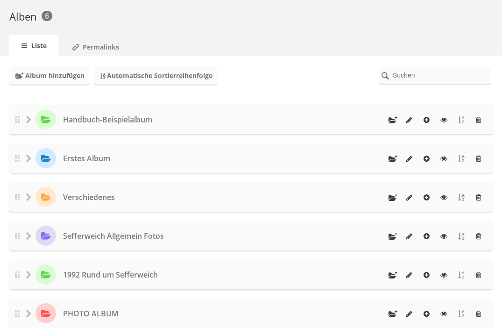
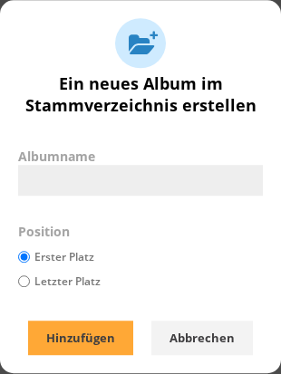
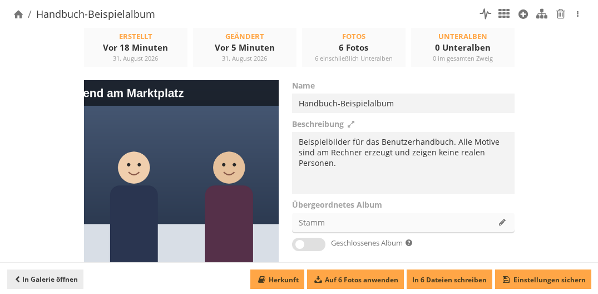
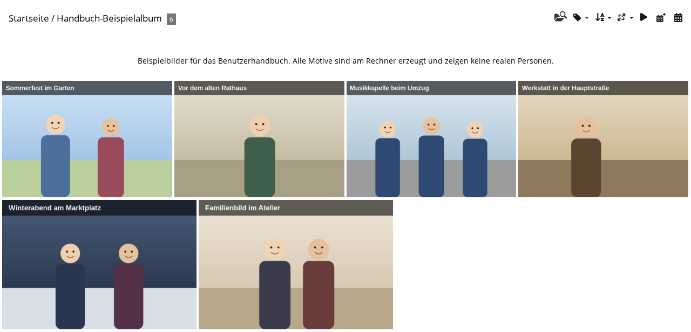

Alben gliedern die Galerie. Ein Foto kann in mehreren Alben liegen. Angelegt und bearbeitet
werden Alben in der Verwaltung unter Alben » Verwaltung
(admin.php?page=albums). Dafür sind Administratorrechte nötig.

Die Albenliste. Jede Zeile hat rechts die Schaltflächen für dieses Album.
Die Schaltflächen am rechten Rand einer Zeile, von links nach rechts:
Album hinzufügen: legt ein Unteralbum in diesem Album an.
Album bearbeiten: öffnet die Eigenschaften mit Name und Beschreibung.
Fotos hinzufügen: öffnet den Upload für dieses Album.
Galerie ansehen: öffnet das Album so, wie Besucher es sehen.
Automatische Sortierreihenfolge: sortiert die Unteralben dieses Albums.
Hat das Album keine Unteralben, ist die Schaltfläche ausgegraut und ohne Funktion.
Album löschen: entfernt das Album.
Album anlegen
Verwaltung » Alben » Verwaltung öffnen.
Oben links auf Album hinzufügen klicken. Damit entsteht ein Album im
Stammverzeichnis. Für ein Unteralbum stattdessen die Schaltfläche
Album hinzufügen in der Zeile des gewünschten Albums verwenden.
Albumname eingeben.
Unter Position festlegen, ob das Album an erster oder an letzter Stelle
einsortiert wird: Erster Platz oder Letzter Platz.
Auf Hinzufügen klicken. Abbrechen schließt den Dialog,
ohne etwas anzulegen.

Der Dialog fragt nur nach Name und Position.
Der Dialog hat kein Feld für die Beschreibung. Die Beschreibung wird danach in den
Eigenschaften des Albums eingetragen.
Beschreibung ergänzen
In der Albenliste in der Zeile des Albums auf Album bearbeiten klicken.
Die Eigenschaften öffnen sich unter
admin.php?page=album-<nummer>-properties.
Text in das Feld Beschreibung schreiben.
Auf Einstellungen sichern klicken. Ohne diesen Schritt bleibt die
Änderung nicht erhalten.

Eigenschaften des Albums, mit Name, Beschreibung und übergeordnetem Album.
Die Felder auf dieser Seite:
Name: der Name, der Besuchern angezeigt wird. Er kann jederzeit geändert
werden.
Beschreibung: freier Text über den Inhalt des Albums. Er erscheint auf der
öffentlichen Albumseite über den Vorschaubildern.
Übergeordnetes Album: das Album, in dem dieses Album liegt.
Stamm bedeutet oberste Ebene. Über den Stift daneben wird das Album
verschoben.
Geschlossenes Album: sperrt das Album vorübergehend, etwa während es
befüllt wird. Besucher sehen es dann nicht.
Oben zeigt die Seite, wann das Album erstellt und zuletzt geändert wurde und wie viele Fotos
und Unteralben es enthält. Die Schaltfläche In Galerie öffnen unten links
zeigt das Album so, wie Besucher es sehen.
Herkunft des Albums
Die Schaltfläche Herkunft öffnet einen Dialog mit vier Feldern:
Physisches Album, Eigentümer, Gescannt am
und Notiz. Sie beschreiben, woher die Vorlagen des Albums stammen. Auf der
Fotoseite heißt das gleiche Feld Albumnotiz (siehe
Titel, Autor, Datum und Beschreibung).
Einstellungen sichern speichert sie am Album. Die Meldung lautet danach
Herkunft gespeichert.
Damit stehen die Werte noch an keinem Foto. Erst Auf N Fotos anwenden
überträgt sie auf die Fotos des Albums; N ist deren Anzahl. Ohne diesen Schritt bleibt die
Zeile Herkunft auf der Fotoseite leer.
In N Dateien schreiben schreibt die Werte zusätzlich in die Bilddateien
selbst. Diese Schaltfläche fehlt, wenn der Server keine Metadaten schreiben kann.
Wo die Beschreibung erscheint
Auf der öffentlichen Albumseite steht die Beschreibung zwischen dem Albumnamen und den
Vorschaubildern.

Die Albumseite. Die Beschreibung steht über den Vorschaubildern.